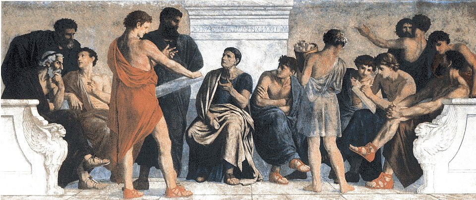

The monomyth of postdoc life

Tolstoy’s famous opening, "Happy families are all alike; every unhappy family is unhappy in its own way," could be rephrased for postdoctoral researchers: Happy postdocs are all alike; every unhappy postdoc is unhappy in its own way.
Joining a newly established academic organization can be appealing, yet it often reveals repeated patterns of unhappiness. This cycle shares striking similarities with the monomyth of the hero. Although the original monomyth was used to compare mythological heroes, in the academic version, it is the true story of the junior researcher.
Joseph Campbell’s version of the hero’s journey is grouped as departure, initiation, and return with 17 distinct stages. For the academic case, I have divided it into four overlapping phases. I leave the stages unspecified, because, as noted, all unhappy postdocs are unhappy in their own way.
- Social Phase: In this period, you enjoy the novelty of the new environment. The atmosphere is socially interactive and engaging. Your curiosity is at its peak, and you eagerly exchange academic information with potential collaborators. Although you observe anomalies among some supervisors and their lab members (such as senior Ph.D. students), you ignore them, failing to pay sufficient attention to the red flags.
- Motivation Phase: Here, your motivation is at its highest. Learning from other disciplines is intriguing and generates a myriad of ideas for upcoming conferences and journals. Your focus is not yet divided. Expectations are set high (sometimes unrealistically) and you welcome research-related challenges. You put considerable effort into transforming ideas into experiments and research outputs, such as papers, presentations, and tutorials.
- Calibration Phase: Following the high-energy phases, mental and physical calibration forces you to adjust your expectations. In this phase, your idealistic approach is halved, while realistic concerns double. Exposure to obligatory non-research activities plays a potent role in re-calibrating your time. These include teaching in consecutive semesters and public relations activities for the organization. Eventually, these activities become your main task, displacing actual research.
- Departure Phase: Most of your efforts now lead to a stream of thankless, non-research tasks. You are fed up with the dual-mode of guarding your time against daily hassles. The only remaining option is to evaluate your exit strategies. You then take the steps to restart the next period of the monomyth. Since it is a repeating cycle, the departure does not end the pattern; it merely triggers another monomyth cycle elsewhere.
Although this model is oversimplified, and not every experience follows this path, it is common to see versions of this "hero's journey" among junior researchers once you know where to look.
References
Image adapted from
The School of Aristotle (Wikimedia Commons)
.
{kind=link}